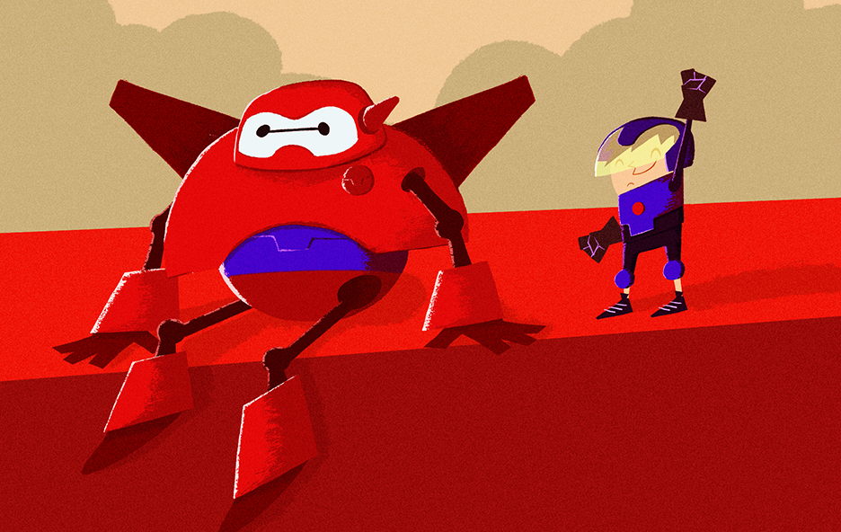

Get in touch
¡Hola, soy Oscar!
Diseño interfaces de usuario y gráficas en movimiento, soy de California y me encanta contar
historias visuales simples y claras.
Desde que tengo memoria, siempre he sido curioso. Aprendí Taekwondo y gimnasia, tome clases de
inglés y equitación. Estudié DOS en mi tiempo libre leyendo los libros de texto de mi hermana.
Aprendí a tocar la batería para pertenecer a una banda de punk, eventualmente escribí música de
percusión para un musical en uno de los teatros más grandes de América Central.
A partir de ahí, me enseñe a editar películas y tuve una pequeña empresa bastante lucrativa
donde vendí ropa de la cajuela de mi automóvil entre mis clases universitarias. Mientras aún
estaba tomando clases, me dieron la oportunidad de producir y crear tres programas para
televisión en guatemalteca.
Cuando me mudé a los EE. UU. Para obtener más oportunidades creativas, aprendí todo lo que pude
de cualquiera que estuviera dispuesto a enseñarme. Fui maestro de salsa y guié a un equipo de
niños increíbles del Boys & Girls Club a ganar un premio nacional en Artes Digitales. Practique
BMX, patiné, enseñé edición digital, aprendí a construir computadoras y llevé mis diseños a
lugares que solo soñé.
Nada de esto hubiera sido posible si no me hubiera dado permiso para aprender sin ego. Es
importante escuchar. Todos tienen una historia que contar, y yo uso la mía todos los días en mi
trabajo. He construido proyectos desde cero con personas increíbles, y es emocionante ver cómo
las experiencias personales informan el diseño.
Todavía estoy aprendiendo constantemente. Mi objetivo es comprender verdaderamente todos los
aspectos de un proyecto (es la razón por la cual aprendí código de computadora), y al final del
día, se trata de colaboración, mi equipo y comunicación significativa.
